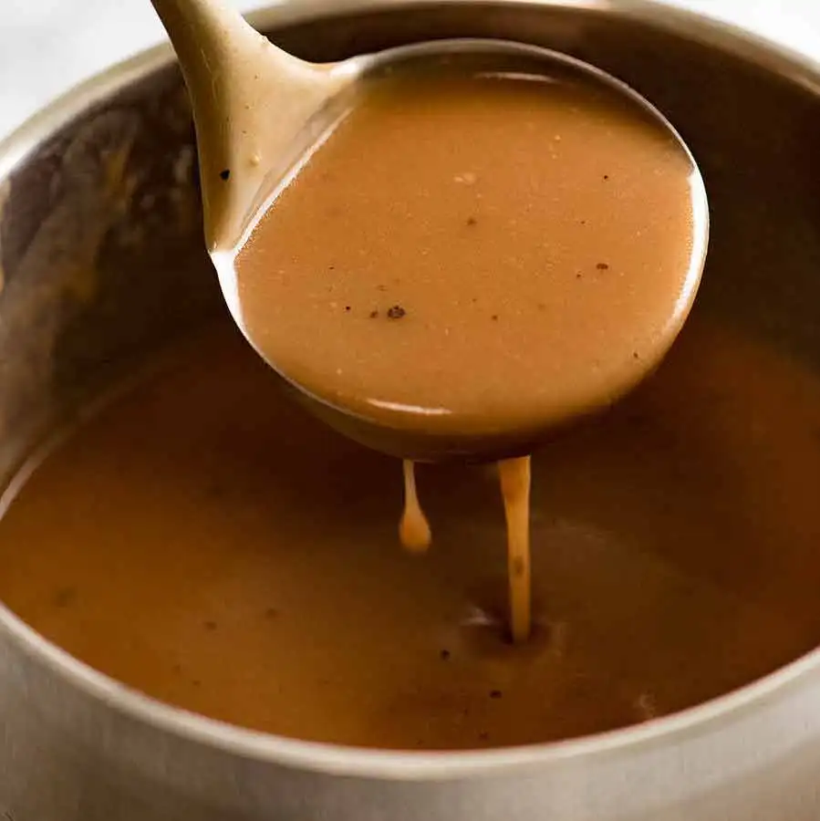

Gravy reigns supreme as the quintessential element of a roast dinner, transcending its humble liquid form to become the heart and soul of the feast. Beyond its sumptuous, silky texture, gravy possesses the transformative power to unify disparate flavors, binding roasted meats, vegetables, and stuffing into a harmonious symphony of taste. Its savoury richness elevates each bite, turning a simple meal into a culinary masterpiece. A vessel of nostalgia, gravy embodies tradition, linking generations through shared meals. Its warm embrace adds a comforting familiarity, completing the sensory experience of a roast dinner, making it not just a condiment but an essential, inseparable companion.
Making gravy takes a little time and effort but it is worth it. Start by placing any number of root vegetables underneath whatever meat it is you are cooking. You want all the lovely meat juices falling down and cooking the veg. Once you take your meat out to rest put the pan with the veg in directly onto the flame. Add half a bottle of white or red wine to the tray and let it bubble up, cooking off the alcohol. THen add as much water as you need to make in gravy. ABout 2 pints should do. Let this simmer for 5-10 minutes and then pass the liquid into a pot through a strainer, squeezing all the juice from the veg. This will now be boiling in a pot, to thicken add a few teaspoons of Bisto Best gravy - the flavour of the Bisto Best depends on what meat you are cooking. Keep adding teaponns full until you have reached your desired thickness.